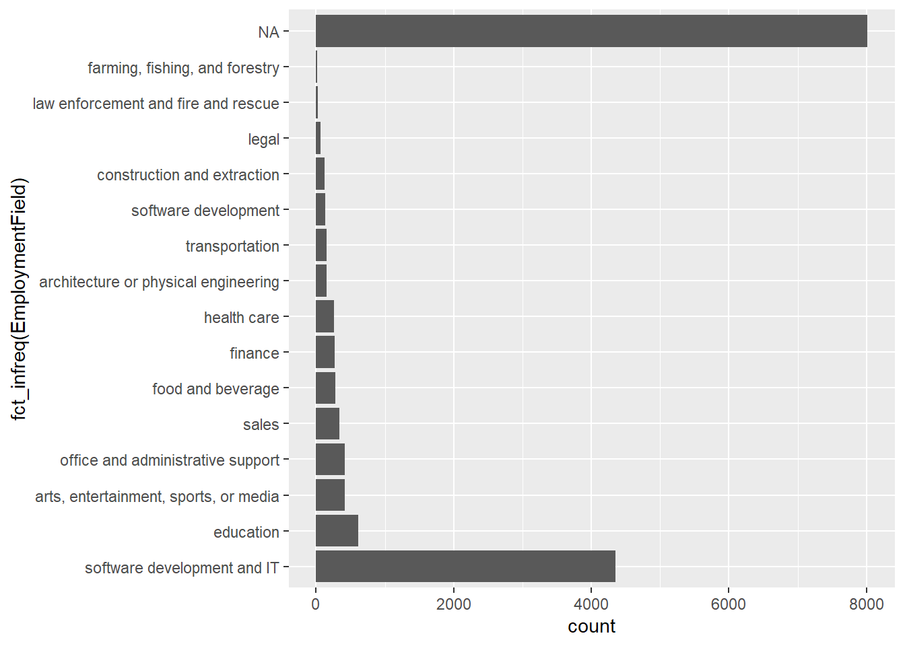
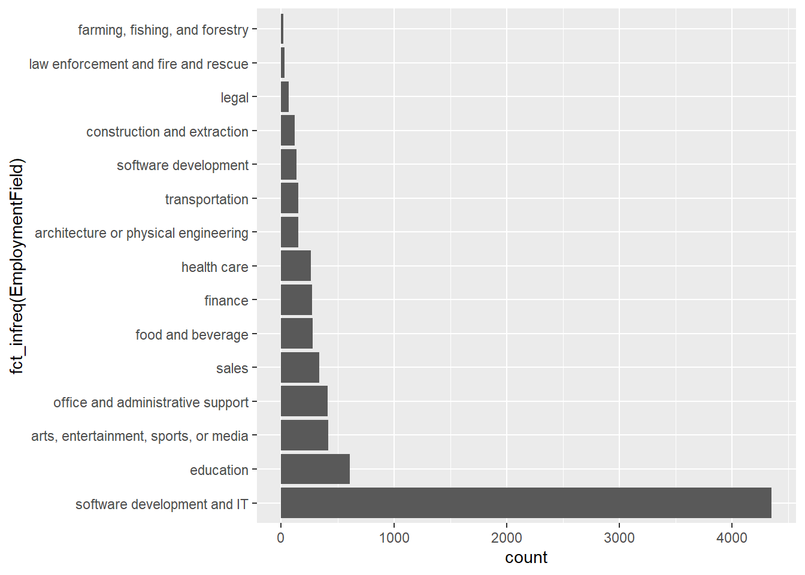

MERL Tech DC workshop: Up your Data Game with R
Charles Guedenet
This tutorial was developed for a workshop at MERL Tech DC in 2018 and presented with Jonathan Seiden. You can find the R code and slides on Github.
The code and examples below are an introduction to the possibilities of using the free and open-source R programming language and software environment for data processing, analysis, and visualization.
#Introduction This was built in an R Markdown Notebook. When you execute code within the notebook, the results appear beneath the code.
R Studio is an “Integrated Development Environment”, or IDE. This means it is a front-end for R that makes it much easier to work with. R Studio is also free, and available for Windows, Mac, and Linux platforms.
#Cleaning your data
Analyzing survey data typically starts with cleaning, recoding, and restructuring, or even joining data sets. For example, you may want to know how many missing cases there are or how many people responded to each question. Or you may want to group certain continuous variables like ages or income into ranges. Lastly, you may want to find and deal with outliers.
Functions like distinct() can quickly get rid of duplicate rows across all variables or for specific variables (e.g. a person’s ID or email address)
Functions like mutate() can help create new variables. For example, creating a new variable for age ranges based on an existing variable for age.
#Overview of survey data and basic analysis
When you’re analyzing survey data, one of the first things you need to do is get an overview of your data. For example, you may want to know basic stats for continuous variables or frequency tables for other types of data.
##Get summary stats
Min. 1st Qu. Median Mean 3rd Qu. Max. NA’s 10.00 23.00 27.00 29.18 33.00 86.00 2007
##Add new stats to your table
| mean | median | IQR | n |
|---|---|---|---|
| 29.17542 | 27 | 10 | 15620 |
##Add a grouping variable
| Gender | mean | median | IQR | n |
|---|---|---|---|---|
| agender | 25.27778 | 25.5 | 7.25 | 38 |
| female | 30.68599 | 28.0 | 11.00 | 2840 |
| genderqueer | 28.21538 | 27.0 | 9.00 | 66 |
| male | 28.81574 | 27.0 | 10.00 | 10766 |
| trans | 30.00000 | 27.0 | 10.25 | 36 |
| NA | 24.47500 | 23.5 | 7.00 | 1874 |
###Exercise: 1. Get summary statistics for another continuous variable, like income, MonthsProgramming, ExpectedEarning, MoneyForLearning, etc. (reference the df object)
Add or change the summary stats you want to calculate (Other useful functions: mean, median, sd, IQR, min, max, quantile, first, last, nth, n, n_distinct)
Add a new grouping variable
##Quickly summarize data Here’s another way to quickly generate summary statistics for select numeric variables using the psyche package
| vars | n | mean | sd | median | trimmed | mad | min | max | range | skew | kurtosis | se | |
|---|---|---|---|---|---|---|---|---|---|---|---|---|---|
| Age | 1 | 13613 | 29.175421 | 9.017717e+00 | 27 | 28.174915 | 7.4130 | 10 | 86 | 76 | 1.174216 | 1.8263327 | 0.0772894 |
| Income | 2 | 7329 | 44930.010506 | 3.558278e+04 | 37000 | 39292.514748 | 26983.3200 | 6000 | 200000 | 194000 | 1.933815 | 4.9750303 | 415.6402084 |
| ExpectedEarning | 3 | 6077 | 53717.586967 | 3.007851e+04 | 50000 | 51741.349784 | 26686.8000 | 6000 | 200000 | 194000 | 1.455659 | 5.2844850 | 385.8439802 |
| HoursLearning | 4 | 14942 | 15.323317 | 1.427487e+01 | 10 | 12.846077 | 8.8956 | 0 | 100 | 100 | 2.039366 | 5.7127639 | 0.1167798 |
| Gender* | 5 | 13746 | 3.576313 | 8.241731e-01 | 4 | 3.720495 | 0.0000 | 1 | 5 | 4 | -1.411665 | 0.1077574 | 0.0070296 |
#Working with Categorical data
##Summarize categorical data
Summarize categorical data and create frequency tables using sjmisc package
# summarize categorical data by creating frequency tables using sjmisc package. Frequency table for the variable: "SchoolDegree"
df %>%
frq(SchoolDegree) %>%
kable()
|
##Create cross-tabulations with two or more variables
| SchoolDegree | agender | female | genderqueer | male | trans |
|---|---|---|---|---|---|
| associate’s degree | 1 | 111 | 2 | 534 | 1 |
| bachelor’s degree | 10 | 1336 | 30 | 4229 | 10 |
| high school diploma or equivalent (GED) | 6 | 165 | 4 | 1172 | 3 |
| master’s degree (non-professional) | 2 | 416 | 6 | 1010 | 2 |
| no high school (secondary school) | 3 | 17 | 3 | 231 | 0 |
| Ph.D. | 1 | 41 | 3 | 113 | 2 |
| professional degree (MBA, MD, JD, etc.) | 0 | 183 | 3 | 500 | 2 |
| some college credit, no degree | 9 | 392 | 9 | 1837 | 12 |
| some high school | 4 | 85 | 4 | 660 | 2 |
| trade, technical, or vocational training | 1 | 68 | 2 | 370 | 2 |
##Create marginal tables using “row”, “col”, or “cell”
| SchoolDegree | agender | female | genderqueer | male | trans |
|---|---|---|---|---|---|
| associate’s degree | 2.70 | 3.94 | 3.03 | 5.01 | 2.78 |
| bachelor’s degree | 27.03 | 47.48 | 45.45 | 39.69 | 27.78 |
| high school diploma or equivalent (GED) | 16.22 | 5.86 | 6.06 | 11.00 | 8.33 |
| master’s degree (non-professional) | 5.41 | 14.78 | 9.09 | 9.48 | 5.56 |
| no high school (secondary school) | 8.11 | 0.60 | 4.55 | 2.17 | 0.00 |
| Ph.D. | 2.70 | 1.46 | 4.55 | 1.06 | 5.56 |
| professional degree (MBA, MD, JD, etc.) | 0.00 | 6.50 | 4.55 | 4.69 | 5.56 |
| some college credit, no degree | 24.32 | 13.93 | 13.64 | 17.24 | 33.33 |
| some high school | 10.81 | 3.02 | 6.06 | 6.19 | 5.56 |
| trade, technical, or vocational training | 2.70 | 2.42 | 3.03 | 3.47 | 5.56 |
###Exercise:
1. Create other cross-tabulations by changing the variables
2. try changing the margin argument to col, row, or cell
#Create charts using ggplot2
##create a simple column chart
####flip it and order bars
df %>% ggplot(aes(fct_infreq(EmploymentField))) +
geom_bar() +
coord_flip()
####Get rid of NA
df %>%
filter(EmploymentField != "") %>%
ggplot(aes(fct_infreq(EmploymentField))) +
geom_bar() +
coord_flip()
##Create a simple histogram
df %>% ggplot(aes(x = Age)) +
geom_histogram()####Adding titles and themes to charts
df %>% ggplot(aes(x = Age)) +
geom_histogram(color = "white") +
theme_minimal() +
labs(title = "My Title", subtitle = "My subtitle")
Try another theme

###Exercise:
1 Change the x variable with another numeric variable
2 Change the theme & titles
3 Change the number of bins
##Create a density plot
# Compare only males and females comparison
df %>%
filter(Gender == "female" | Gender == "male") %>%
ggplot(aes(x = Age, fill = Gender)) +
geom_density(alpha = .6) +
theme_fivethirtyeight()
##Other examples of charts with the ggplot package
Relationship between employment status and job preference
df %>%
flat_table(EmploymentStatus, JobPref) %>%
data.frame() %>%
ggplot(aes(EmploymentStatus, JobPref)) +
geom_tile(aes(fill = Freq), colour = "white") +
scale_fill_continuous() +
coord_fixed(ratio = 1) +
theme(axis.text.x = element_text(angle = 90, hjust = 1, vjust = 0.5))###Stacked bar chart
Comparing gender breakdown across ages
df %>%
select(Age, Gender) %>%
group_by(Age, Gender) %>%
summarise(count = n()) %>%
ggplot(aes(Age, count, fill = Gender)) +
geom_bar(stat = "identity", position = "fill", color = "white") +
xlim(c(10, 70))